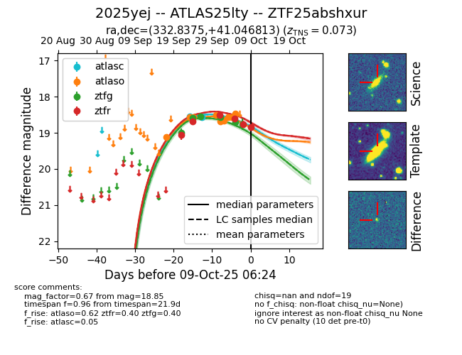
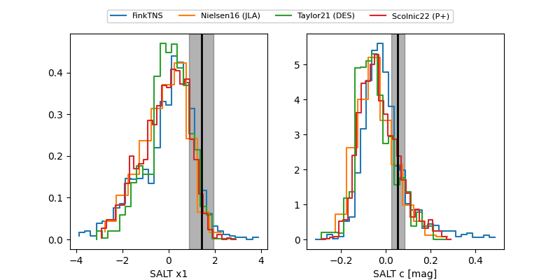

FINK: ZTF25abshxur
Lasair: ZTF25abshxur
ALeRCE: ZTF25abshxur
TNS: 2025yej
YSE: 2025yej
ZTF25abshxur (ztf,fink)
2025yej (tns,yse)
ATLAS25lty (atlas)
equatorial (ra, dec) = (332.8375,+41.04681)
galactic (l, b) = (93.1592,-12.39054)


last atlasc=18.57, atlaso=18.47, ztfg=18.77, ztfr=18.85
2 atlasc, 9 atlaso, 6 ztfg, 6 ztfr detections